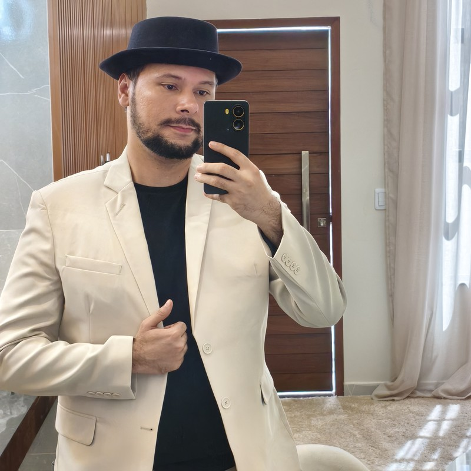

Livro
Banzo: A Saudade Que Mata
Obra literária autoral que explora a memória, a saudade e a identidade cultural. Editora Frutificando, 2024.
Liderança Educacional
Sou uma liderança educacional atuando como professor de Língua Portuguesa, com experiência no Ensino Fundamental II (6º ao 9º ano) na rede pública estadual de Goiás (SEDUC-GO). Em 2026, atuo com turmas de 7º e 9º ano, com maior carga horária dedicada ao 9º ano. Doutor em Ciência da Informação pela UFPB e mestre pela UFPE, transformo indicadores pedagógicos — como os dados do SAEB e do SAEGO — em ações concretas de ensino e aprendizagem.

Liderança Educacional
Como professor de Língua Portuguesa do 9º ano, acompanho de perto os indicadores do SAEGO e do SAEB para transformar diagnóstico em plano de ação pedagógica. Os números abaixo são do Colégio Estadual Alceu de Araújo Roriz (CRE Luziânia), ano a ano.
"Esse avanço é resultado de um conjunto de ações: planejamento, adaptação de materiais, acompanhamento dos estudantes e foco na aprendizagem real."
— Ermeson Nathan Alves, 2025
"Este resultado pertence a nós: aos alunos que abraçaram o desafio, e ao trabalho que investimos em transformar a sala de aula em um espaço de aprendizagem real."
— Ermeson Nathan Alves, 2026
Fonte: Painéis SEDUC-GO — SAEGO e Avaliação Formativa/Diagnóstica. Próxima avaliação em outubro de 2026.
Currículo
Universidade Federal da Paraíba (UFPB)
Universidade Federal de Pernambuco (UFPE)
União Brasileira de Faculdades (UNIBF)
Centro Universitário Cidade Verde (UNICV)
Universidade Federal do Cariri (UFCA)
Secretaria de Estado da Educação de Goiás (SEDUC-GO) — Ensino Fundamental II (6º ao 9º ano). Em 2026, atuação em 7º e 9º anos, com maior carga horária no 9º ano.
Programa Ensina Brasil
Revista Eletrônica do Curso de Direito da UFSM (Qualis A1)
Biblioteca Pública Municipal de Altaneira
Curso de Biblioteconomia — Universidade Federal da Bahia (UFBA)
Curso de Biblioteconomia — Universidade Federal de Alagoas (UFAL)
Abordagem
Acredito que ensinar Língua Portuguesa vai além da norma gramatical: é abrir caminhos para a leitura crítica do mundo. Como pesquisador em Ciência da Informação, trago para a sala de aula um olhar interdisciplinar sobre memória, cultura e conhecimento, unindo rigor acadêmico e sensibilidade pedagógica.
"A leitura do mundo precede a leitura da palavra."
— Paulo Freire
Projetos
Obra literária autoral que explora a memória, a saudade e a identidade cultural. Editora Frutificando, 2024.
Produção de reportagem multimodal com todas as turmas do 9º ano, ampliando a escrita e a oralidade do gênero jornalístico em diálogo com o Revisa Goiás. Vídeo roteirizado, filmado e editado pelos estudantes do 9º Ano A. Colégio Estadual Alceu de Araújo Roriz.
Aplicação da metodologia Rotação por Estação a partir da crônica "A Foto", de Luis Fernando Veríssimo, explorando a multimodalidade do discurso escrito e oral. Colégio Estadual Alceu de Araújo Roriz.
Site autoral criado com os estudantes da Eletiva de Produção Textual, reunindo crônicas mensais sobre temas cotidianos e culturais, escritas com liberdade, crítica e sensibilidade poética.
Material de recomposição da aprendizagem elaborado para estudantes da inclusão, reunindo os conteúdos do 1º e 2º bimestres em atividades acessíveis, mapas mentais e imagens para colorir.
Dinâmica pedagógica inspirada na série Round 6, criada para estimular raciocínio lógico, estratégia e protagonismo dos estudantes do 9º ano por meio de uma competição em etapas.
Participação como Trainer do Programa Ensina Brasil, apoiando o comitê de boas práticas pedagógicas da escola na divulgação de experiências de ensino bem-sucedidas.
Continuidade do acompanhamento como Trainer do Ensina Brasil, incentivando o intercâmbio de metodologias eficazes entre os professores da escola.
Estou aberto a projetos educacionais, parcerias de pesquisa e oportunidades na área de Língua Portuguesa e Literatura.